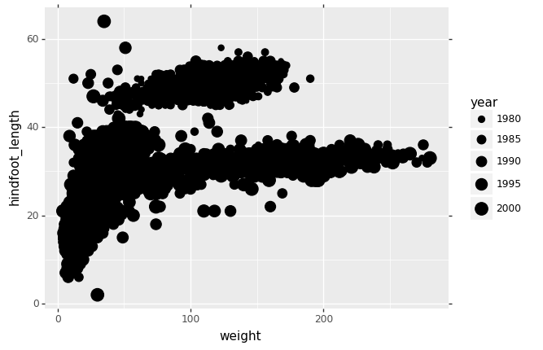
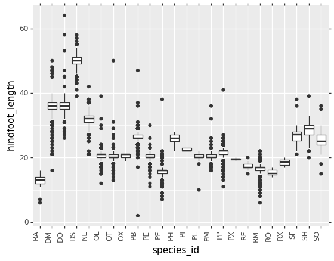
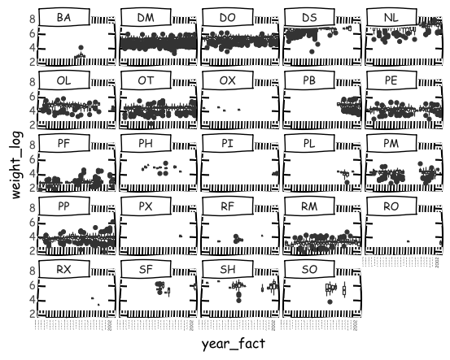
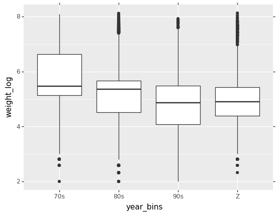

<!DOCTYPE html>
<html lang="en">

<head>
    <meta charset="utf-8">
    <meta http-equiv="X-UA-Compatible" content="IE=edge">
    <meta name="viewport" content="width=device-width, initial-scale=1.0">
    <meta name="description" content="Monash Data Fluency Python Workshops">  
    <link rel="shortcut icon" href="../../img/favicon.ico">

    <title>Plotting with ggplot for Python - Introduction to Python Workshop</title>

    <link href="../../css/bootstrap-custom.min.css" rel="stylesheet">
    <link href="//maxcdn.bootstrapcdn.com/font-awesome/4.7.0/css/font-awesome.min.css" rel="stylesheet">
    <link rel="stylesheet" href="//cdn.jsdelivr.net/font-hack/2.018/css/hack.min.css">
    <link href='//fonts.googleapis.com/css?family=PT+Sans:400,400italic,700,700italic&subset=latin-ext,latin' rel='stylesheet' type='text/css'>
    <link href='//fonts.googleapis.com/css?family=Open+Sans:300italic,400italic,700italic,400,300,600,700&subset=latin-ext,latin' rel='stylesheet' type='text/css'>
    <link href="../../css/base.css" rel="stylesheet">
    <link href="../../css/cinder.css" rel="stylesheet">
    <link rel="stylesheet" href="../../css/highlight.css">


    <link href="../../css/extra.css" rel="stylesheet">

    <!-- HTML5 shim and Respond.js IE8 support of HTML5 elements and media queries -->
    <!--[if lt IE 9]>
            <script src="https://oss.maxcdn.com/libs/html5shiv/3.7.0/html5shiv.js"></script>
            <script src="https://oss.maxcdn.com/libs/respond.js/1.3.0/respond.min.js"></script>
        <![endif]-->

    <script src="https://ajax.googleapis.com/ajax/libs/webfont/1.5.18/webfont.js"></script>
    <script>
    WebFont.load({
        google: {
            families: ['Open Sans', 'PT Sans']
        }
    });
    </script>

    
</head>

<body>

    <div class="navbar navbar-default navbar-fixed-top" role="navigation">
    <div class="container">

        <!-- Collapsed navigation -->
        <div class="navbar-header">
            <!-- Expander button -->
            <button type="button" class="navbar-toggle" data-toggle="collapse" data-target=".navbar-collapse">
                <span class="sr-only">Toggle navigation</span>
                <span class="icon-bar"></span>
                <span class="icon-bar"></span>
                <span class="icon-bar"></span>
            </button>
            

            <!-- Main title -->

            <a class="navbar-brand" href="../..">Introduction to Python Workshop</a>
        </div>

        <!-- Expanded navigation -->
        <div class="navbar-collapse collapse">
                <!-- Main navigation -->
                <ul class="nav navbar-nav">
                
                
                    <li >
                        <a href="../..">Home</a>
                    </li>
                
                
                
                    <li class="dropdown active">
                        <a href="#" class="dropdown-toggle" data-toggle="dropdown">Modules <b class="caret"></b></a>
                        <ul class="dropdown-menu">
                        
                            
<li >
    <a href="../intro/">Introduction - the basics of Python</a>
</li>

                        
                            
<li >
    <a href="../working_with_data/">Working with Data</a>
</li>

                        
                            
<li >
    <a href="../missing_values/">Missing values</a>
</li>

                        
                            
<li >
    <a href="../indexing/">Indexing</a>
</li>

                        
                            
<li >
    <a href="../loops/">Loops</a>
</li>

                        
                            
<li class="active">
    <a href="./">Plotting with ggplot for Python</a>
</li>

                        
                        </ul>
                    </li>
                
                
                
                    <li >
                        <a href="../../halfday/">Half Day Course</a>
                    </li>
                
                
                
                    <li >
                        <a href="../../fullday/">Full Day Course</a>
                    </li>
                
                
                </ul>

            <ul class="nav navbar-nav navbar-right">
                    <li>
                        <a href="#" data-toggle="modal" data-target="#mkdocs_search_modal">
                            <i class="fa fa-search"></i> Search
                        </a>
                    </li>
                    <li >
                        <a rel="next" href="../loops/">
                            <i class="fa fa-arrow-left"></i> Previous
                        </a>
                    </li>
                    <li >
                        <a rel="prev" href="../../halfday/">
                            Next <i class="fa fa-arrow-right"></i>
                        </a>
                    </li>
                    <li>
                        <a href="https://github.com/MonashDataFluency/python-workshop-base/blob/master/README.md#modifying-and-building/modules/plotting_with_ggplot.md"><i class="fa fa-github"></i> Edit on GitHub</a>
                    </li>
            </ul>
        </div>
    </div>
</div>

    <div class="container">
        
        <div class="col-md-3"><div class="bs-sidebar hidden-print affix well" role="complementary">
    <ul class="nav bs-sidenav">
        <li class="first-level active"><a href="#making-plots-with-ggplot-aka-plotnine">Making Plots With ggplot (aka plotnine)</a></li>
            <li class="second-level"><a href="#introduction">Introduction</a></li>
                
                <li class="third-level"><a href="#the-grammar-of-graphics">The Grammar of Graphics</a></li>
        <li class="first-level "><a href="#plotting-in-ggplot-style">Plotting in ggplot style</a></li>
            <li class="second-level"><a href="#introduction-to-plotting">Introduction to plotting</a></li>
                
            <li class="second-level"><a href="#challenges">Challenges</a></li>
                
            <li class="second-level"><a href="#more-geom-types">More geom types</a></li>
                
            <li class="second-level"><a href="#challenges_1">Challenges</a></li>
                
            <li class="second-level"><a href="#faceting">Faceting</a></li>
                
            <li class="second-level"><a href="#theming">Theming</a></li>
                
            <li class="second-level"><a href="#extra-bits-1">Extra bits 1</a></li>
                
            <li class="second-level"><a href="#extra-bits-2">Extra bits 2</a></li>
                
    </ul>
</div></div>
        <div class="col-md-9" role="main">

<style>
.output_label {
    text-align: right;
    margin: -1em;
    padding: 0;
    font-size: 0.5em;
    color: grey
}
</style>

<h1 id="making-plots-with-ggplot-aka-plotnine">Making Plots With ggplot (aka plotnine)</h1>
<!-- 
## Instructor notes

*Estimated teaching time:* 40 min

*Estimated challenge time:* 50 min

*Key questions:*

  - " How can I visualize data in Python ?"
  - " What is 'grammar of graphics' ?"

*Learning objectives:*

  - "Familiarise yourself with The Grammar of Graphics through plotinine library"
  - "Create a ggplot object."
  - "Explore different geom objects"
  - "Explore other layers of ggplot, including themes and labels"

*Key points:*

  - "plotnine is python implementation of The Gramma of Graphics"
  - "ggplot is a set of gramma rules to make publication quality plots"
  - "ggplot has idea of layer, building a plot is just adding different layers together"
 -->

<h2 id="introduction">Introduction</h2>
<p>Python has a number of powerful plotting libraries to choose from. One of the oldest and most popular is <a href="https://matplotlib.org/"><code>matplotlib</code></a> - it forms the foundation for many other Python plotting libraries. For this exercise we are going to use <a href="https://plotnine.readthedocs.io/en/stable/"><code>plotnine</code></a> which is a Python implementation of the <a href="http://link.springer.com/book/10.1007%2F0-387-28695-0">The Grammar of Graphics</a>, inspired by the interface of the <a href="http://ggplot2.org/"><code>ggplot2</code></a> package from R. <code>plotnine</code> (and it's R cousin <code>ggplot2</code>) is a very nice way to create publication quality plots.</p>
<h4 id="the-grammar-of-graphics">The Grammar of Graphics</h4>
<blockquote>
<p>Statistical graphics is a mapping from data to aesthetic attributes (colour, shape, size) of geometric objects (points, lines, bars)</p>
<p>Faceting can be used to generate the same plot for different subsets of the dataset</p>
</blockquote>
<p>These are basic building blocks according to the grammar of graphics:</p>
<ul>
<li><strong>data</strong> The data + a set of aesthetic mappings that describing variables mapping</li>
<li><strong>geom</strong> Geometric objects, represent what you actually see on the plot: points, lines, polygons, etc.</li>
<li><strong>stats</strong> Statistical transformations, summarise data in many useful ways.</li>
<li><strong>scale</strong> The scales map values in the data space to values in an aesthetic space</li>
<li><strong>coord</strong> A coordinate system, describes how data coordinates are mapped to the plane of the graphic.</li>
<li><strong>facet</strong> A faceting specification describes how to break up the data into subsets for plotting individual set</li>
</ul>
<p>Let's explore these in detail.</p>
<p>First, install the <code>pandas</code> and <code>plotnine</code> packages to ensure they are available.</p>
<pre><code class="python">!pip install pandas plotnine
</code></pre>

<pre class="output">
<div class="output_label">output</div>
<code class="text">
Requirement already satisfied: pandas in /Users/perry/.virtualenvs/python-workshop-base-ufuVBSbV/lib/python3.6/site-packages (0.23.0)
Requirement already satisfied: plotnine in /Users/perry/.virtualenvs/python-workshop-base-ufuVBSbV/lib/python3.6/site-packages (0.3.0)
Requirement already satisfied: python-dateutil>=2.5.0 in /Users/perry/.virtualenvs/python-workshop-base-ufuVBSbV/lib/python3.6/site-packages (from pandas) (2.7.3)
Requirement already satisfied: pytz>=2011k in /Users/perry/.virtualenvs/python-workshop-base-ufuVBSbV/lib/python3.6/site-packages (from pandas) (2018.4)
Requirement already satisfied: numpy>=1.9.0 in /Users/perry/.virtualenvs/python-workshop-base-ufuVBSbV/lib/python3.6/site-packages (from pandas) (1.14.3)
Requirement already satisfied: six in /Users/perry/.virtualenvs/python-workshop-base-ufuVBSbV/lib/python3.6/site-packages (from plotnine) (1.11.0)
Requirement already satisfied: statsmodels>=0.8.0 in /Users/perry/.virtualenvs/python-workshop-base-ufuVBSbV/lib/python3.6/site-packages (from plotnine) (0.9.0)
Requirement already satisfied: patsy>=0.4.1 in /Users/perry/.virtualenvs/python-workshop-base-ufuVBSbV/lib/python3.6/site-packages (from plotnine) (0.5.0)
Requirement already satisfied: scipy>=1.0.0 in /Users/perry/.virtualenvs/python-workshop-base-ufuVBSbV/lib/python3.6/site-packages (from plotnine) (1.1.0)
Requirement already satisfied: matplotlib>=2.1.0 in /Users/perry/.virtualenvs/python-workshop-base-ufuVBSbV/lib/python3.6/site-packages (from plotnine) (2.2.2)
Requirement already satisfied: mizani>=0.4.1 in /Users/perry/.virtualenvs/python-workshop-base-ufuVBSbV/lib/python3.6/site-packages (from plotnine) (0.4.6)
Requirement already satisfied: pyparsing!=2.0.4,!=2.1.2,!=2.1.6,>=2.0.1 in /Users/perry/.virtualenvs/python-workshop-base-ufuVBSbV/lib/python3.6/site-packages (from matplotlib>=2.1.0->plotnine) (2.2.0)
Requirement already satisfied: cycler>=0.10 in /Users/perry/.virtualenvs/python-workshop-base-ufuVBSbV/lib/python3.6/site-packages (from matplotlib>=2.1.0->plotnine) (0.10.0)
Requirement already satisfied: kiwisolver>=1.0.1 in /Users/perry/.virtualenvs/python-workshop-base-ufuVBSbV/lib/python3.6/site-packages (from matplotlib>=2.1.0->plotnine) (1.0.1)
Requirement already satisfied: palettable in /Users/perry/.virtualenvs/python-workshop-base-ufuVBSbV/lib/python3.6/site-packages (from mizani>=0.4.1->plotnine) (3.1.1)
Requirement already satisfied: setuptools in /Users/perry/.virtualenvs/python-workshop-base-ufuVBSbV/lib/python3.6/site-packages (from kiwisolver>=1.0.1->matplotlib>=2.1.0->plotnine) (39.1.0)

</code>
</pre>

<pre><code class="python"># We run this to suppress various deprecation warnings from plotnine - keeps our notebook cleaner
import warnings
warnings.filterwarnings('ignore')
</code></pre>

<h1 id="plotting-in-ggplot-style">Plotting in ggplot style</h1>
<p>Let set up our working environment with necessary libraries and also load our csv file into data frame called <code>survs_df</code>,</p>
<pre><code class="python">import numpy as np
import pandas as pd
from plotnine import *

%matplotlib inline
survs_df = pd.read_csv('data/surveys.csv').dropna()
</code></pre>

<p>To produce a plot with the <code>ggplot</code> class from <code>plotnine</code>, we must provide three things:</p>
<ol>
<li>A data frame containing our data.</li>
<li>How the columns of the data frame can be translated into positions, colors, sizes, and shapes of graphical elements ("aesthetics").</li>
<li>The actual graphical elements to display ("geometric objects").</li>
</ol>
<h2 id="introduction-to-plotting">Introduction to plotting</h2>
<pre><code class="python">ggplot(survs_df, aes('weight', 'hindfoot_length')) + geom_point()
</code></pre>

<p></p>
<pre class="output">
<div style="text-align: right; margin: -1em; padding: 0;"><span style="font-size: 0.5em; color: grey">output</span></div>
<code class="text">
<ggplot: (-9223372036570346194)>
</code>
</pre>

<p>Lets see if we can also include information about species and year</p>
<pre><code class="python">ggplot(survs_df, aes('weight', 'hindfoot_length',
    size = 'year')) + geom_point()
</code></pre>

<p></p>
<pre class="output">
<div style="text-align: right; margin: -1em; padding: 0;"><span style="font-size: 0.5em; color: grey">output</span></div>
<code class="text">
<ggplot: (-9223372036570346103)>
</code>
</pre>

<pre><code class="python">ggplot(survs_df, aes('weight', 'hindfoot_length', 
    size = 'year', color = 'species_id')) + geom_point()
</code></pre>

<p></p>
<pre class="output">
<div style="text-align: right; margin: -1em; padding: 0;"><span style="font-size: 0.5em; color: grey">output</span></div>
<code class="text">
<ggplot: (-9223372036569539233)>
</code>
</pre>

<p>We can do simple counting plot, to see how many observation (data points) we have for each year for example</p>
<pre><code class="python">ggplot(survs_df, aes('year')) + \
    geom_bar(stat = 'count')
</code></pre>

<p></p>
<pre class="output">
<div style="text-align: right; margin: -1em; padding: 0;"><span style="font-size: 0.5em; color: grey">output</span></div>
<code class="text">
<ggplot: (-9223372036575459752)>
</code>
</pre>

<p>Let's now also color by species to see how many observation we have per species in a given year</p>
<pre><code class="python">ggplot(survs_df, aes('year', fill = 'species_id')) + \
    geom_bar(stat = 'count')
</code></pre>

<p></p>
<pre class="output">
<div style="text-align: right; margin: -1em; padding: 0;"><span style="font-size: 0.5em; color: grey">output</span></div>
<code class="text">
<ggplot: (-9223372036570019317)>
</code>
</pre>

<h2 id="challenges">Challenges</h2>
<p>Is there a better visualisation for comparing weight across years? The plot should have categorical data on x axis and continuous on y axis.</p>
<p>Plot a boxplot of <code>hindfoot_length</code> across different species (<code>species_id</code> column).</p>
<!-- 
## Solution
 -->

<!--

wzxhzdk:8


<pre class="output">
<div style="text-align: right; margin: -1em; padding: 0;"><span style="font-size: 0.5em; color: grey">output</span></div>
<code class="text">
<ggplot: (284756691)>
</code>
</pre>


 -->

<h2 id="more-geom-types">More geom types</h2>
<pre><code class="python">ggplot(survs_df, aes('year', 'weight')) + \
    geom_boxplot()
</code></pre>

<p></p>
<pre class="output">
<div style="text-align: right; margin: -1em; padding: 0;"><span style="font-size: 0.5em; color: grey">output</span></div>
<code class="text">
<ggplot: (-9223372036570019198)>
</code>
</pre>

<p>Why are we not seeing mulitple boxplots, one for each year?
This is because year variable is continues in our data frame, but for the purpose we want it to be categorical.</p>
<pre><code class="python">survs_df['year_fact'] = pd.Series(survs_df['year'], dtype = &quot;category&quot;)

ggplot(survs_df, aes('year_fact', 'weight')) + \
    geom_boxplot()
</code></pre>

<p></p>
<pre class="output">
<div style="text-align: right; margin: -1em; padding: 0;"><span style="font-size: 0.5em; color: grey">output</span></div>
<code class="text">
<ggplot: (-9223372036574183655)>
</code>
</pre>

<p>You'll notice the x-axis labels are overlapped. To flip them 90-degrees we can apply a <code>theme</code> so they look less cluttered. We will revisit themes later.</p>
<pre><code class="python">ggplot(survs_df, aes('year_fact', 'weight')) + \
    geom_boxplot() + \
    theme(axis_text_x = element_text(angle=90, hjust=1))
</code></pre>

<p></p>
<pre class="output">
<div style="text-align: right; margin: -1em; padding: 0;"><span style="font-size: 0.5em; color: grey">output</span></div>
<code class="text">
<ggplot: (-9223372036568699020)>
</code>
</pre>

<p>To save some typing, let's define this x-axis label rotating theme as a short variable name that we can reuse:</p>
<pre><code class="python">flip_xlabels = theme(axis_text_x = element_text(angle=90, hjust=1))
</code></pre>

<pre><code class="python">ggplot(survs_df, aes('year_fact', 'weight')) + \
    geom_violin() + \
    flip_xlabels
</code></pre>

<p></p>
<pre class="output">
<div style="text-align: right; margin: -1em; padding: 0;"><span style="font-size: 0.5em; color: grey">output</span></div>
<code class="text">
<ggplot: (277473330)>
</code>
</pre>

<p>To save an image for later:</p>
<pre><code class="python">plt1 = ggplot(survs_df, aes('year_fact', 'weight')) + \
           geom_boxplot() + \
           xlab(&quot;Years&quot;) + \
           ylab(&quot;Weight log2(kg)&quot;) + \
           ggtitle(&quot;Boxplots, summary of species weight in each year&quot;)

ggsave(filename=&quot;plot1.png&quot;,
       plot=plt1,
       device='png',
       dpi=300,
       height=25,
       width=25)
</code></pre>

<pre class="output">
<div class="output_label">output</div>
<code class="text">
/Users/perry/.virtualenvs/python-workshop-base-ufuVBSbV/lib/python3.6/site-packages/plotnine/ggplot.py:688: UserWarning: Saving 25 x 25 in image.
  from_inches(height, units), units))
/Users/perry/.virtualenvs/python-workshop-base-ufuVBSbV/lib/python3.6/site-packages/plotnine/ggplot.py:689: UserWarning: Filename: plot1.png
  warn('Filename: {}'.format(filename))

</code>
</pre>

<h2 id="challenges_1">Challenges</h2>
<p>Can you log2 transform <code>weight</code> and plot a "normalised" boxplot ? Hint: use <code>np.log2()</code> function and name new column <code>weight_log</code>.</p>
<p>Does a log2 transform make this data visualisation better ?</p>
<!-- 
## Solution
 -->

<!--

wzxhzdk:15


<pre class="output">
<div style="text-align: right; margin: -1em; padding: 0;"><span style="font-size: 0.5em; color: grey">output</span></div>
<code class="text">
<ggplot: (-9223372036574168860)>
</code>
</pre>


 -->

<pre><code class="python">survs_df['weight_log'] = np.log2(survs_df['weight'])

ggplot(survs_df, aes('year_fact', 'weight_log')) + \
    geom_boxplot() + \
    xlab(&quot;Years&quot;) + \
    ylab(&quot;Weight log2(kg)&quot;) + \
    ggtitle(&quot;Boxplots, summary of species wieght in each year&quot;) + \
    flip_xlabels
</code></pre>

<p></p>
<pre class="output">
<div style="text-align: right; margin: -1em; padding: 0;"><span style="font-size: 0.5em; color: grey">output</span></div>
<code class="text">
<ggplot: (-9223372036570324059)>
</code>
</pre>

<h2 id="faceting">Faceting</h2>
<p>ggplot has a special technique called <em>faceting</em> that allows to split one plot
into multiple plots based on a factor included in the dataset. We will use it to
make one plot for a time series for each species.</p>
<pre><code class="python">ggplot(survs_df, aes('year_fact', 'weight')) + \
    geom_boxplot() + \
    facet_wrap(&quot;~sex&quot;) + \
    flip_xlabels + \
    theme(axis_text_x = element_text(size=6))
</code></pre>

<p></p>
<pre class="output">
<div style="text-align: right; margin: -1em; padding: 0;"><span style="font-size: 0.5em; color: grey">output</span></div>
<code class="text">
<ggplot: (284879971)>
</code>
</pre>

<pre><code class="python">ggplot(survs_df, aes('year_fact', 'weight_log')) + \
    geom_boxplot() + \
    theme(axis_text_x = element_text(size=6, angle=90, hjust=1)) + \
    facet_wrap(&quot;~species_id&quot;) + \
    flip_xlabels + \
    theme(axis_text_x = element_text(size=8))
</code></pre>

<p></p>
<pre class="output">
<div style="text-align: right; margin: -1em; padding: 0;"><span style="font-size: 0.5em; color: grey">output</span></div>
<code class="text">
<ggplot: (285121775)>
</code>
</pre>

<h2 id="theming">Theming</h2>
<pre><code class="python">ggplot(survs_df, aes('year_fact', 'weight')) + \
    geom_boxplot() + \
    theme_bw() + \
    flip_xlabels
</code></pre>

<p></p>
<pre class="output">
<div style="text-align: right; margin: -1em; padding: 0;"><span style="font-size: 0.5em; color: grey">output</span></div>
<code class="text">
<ggplot: (280538681)>
</code>
</pre>

<pre><code class="python">ggplot(survs_df, aes('year_fact', 'weight_log')) + \
    geom_boxplot() + \
    facet_wrap(&quot;~species_id&quot;) + \
    theme_xkcd() + \
    theme(axis_text_x = element_text(size=4, angle=90, hjust=1))
</code></pre>

<p></p>
<pre class="output">
<div style="text-align: right; margin: -1em; padding: 0;"><span style="font-size: 0.5em; color: grey">output</span></div>
<code class="text">
<ggplot: (285449697)>
</code>
</pre>

<h2 id="extra-bits-1">Extra bits 1</h2>
<p>Let's try to bin years into decades, which could be crude but might gives simple images to look at.</p>
<pre><code class="python">bins = [(survs_df['year'] &lt; 1980),
        (survs_df['year'] &lt; 1990),
        (survs_df['year'] &lt; 2000),
        (survs_df['year'] &gt;= 2000)]

labels = ['70s', '80s', '90s', 'Z']

survs_df['year_bins'] = np.select(bins, labels)
</code></pre>

<pre><code class="python">plt2 = ggplot(survs_df, aes('year_bins', 'weight_log')) + \
           geom_boxplot()
plt2
</code></pre>

<p></p>
<pre class="output">
<div style="text-align: right; margin: -1em; padding: 0;"><span style="font-size: 0.5em; color: grey">output</span></div>
<code class="text">
<ggplot: (-9223372036569403055)>
</code>
</pre>

<pre><code class="python">plt2 = ggplot(survs_df, aes('year_bins', 'weight_log')) + \
           geom_boxplot() + \
           theme(axis_text_x = element_text(angle=90, hjust=1)) + \
           facet_wrap(&quot;~species_id&quot;) 
plt2
</code></pre>

<p></p>
<pre class="output">
<div style="text-align: right; margin: -1em; padding: 0;"><span style="font-size: 0.5em; color: grey">output</span></div>
<code class="text">
<ggplot: (284841350)>
</code>
</pre>

<h2 id="extra-bits-2">Extra bits 2</h2>
<p>This is a different way to look at your data</p>
<pre><code class="python">ggplot(survs_df, aes(&quot;year_fact&quot;, &quot;weight&quot;)) + \
    stat_summary(fun_y = np.mean, fun_ymin=np.min, fun_ymax=np.max) + \
    theme(axis_text_x = element_text(angle=90, hjust=1))

ggplot(survs_df, aes(&quot;year_fact&quot;, &quot;weight&quot;)) + \
    stat_summary(fun_y = np.median, fun_ymin=np.min, fun_ymax=np.max) + \
    theme(axis_text_x = element_text(angle=90, hjust=1))

ggplot(survs_df, aes(&quot;year_fact&quot;, &quot;weight_log&quot;)) + \
    stat_summary(fun_y = np.mean, fun_ymin=np.min, fun_ymax=np.max) + \
    theme(axis_text_x = element_text(angle=90, hjust=1))
</code></pre>

<p></p>
<pre class="output">
<div style="text-align: right; margin: -1em; padding: 0;"><span style="font-size: 0.5em; color: grey">output</span></div>
<code class="text">
<ggplot: (280413679)>
</code>
</pre></div>
        
    </div>

    <footer class="col-md-12 text-center">
        <hr>
        <p>
        <small>Documentation built with <a href="http://www.mkdocs.org/">MkDocs</a>.</p></small>
    </footer>

    <script src="../../js/jquery-1.10.2.min.js"></script>
    <script src="../../js/bootstrap-3.0.3.min.js"></script>
    <script src="../../js/highlight.pack.js"></script>
    <script>hljs.initHighlightingOnLoad();</script>
    <script>
    var base_url = '../..';
    </script>
    <script data-main="../../mkdocs/js/search.js" src="../../mkdocs/js/require.js"></script>
    <script src="../../js/base.js"></script>
    <script src="../../search/require.js"></script>
    <script src="../../search/search.js"></script>

    <div class="modal" id="mkdocs_search_modal" tabindex="-1" role="dialog" aria-labelledby="Search Modal" aria-hidden="true">
        <div class="modal-dialog">
            <div class="modal-content">
                <div class="modal-header">
                    <button type="button" class="close" data-dismiss="modal">
                        <span aria-hidden="true">&times;</span>
                        <span class="sr-only">Close</span>
                    </button>
                    <h4 class="modal-title" id="exampleModalLabel">Search</h4>
                </div>
                <div class="modal-body">
                    <p>
                        From here you can search these documents. Enter your search terms below.
                    </p>
                    <form role="form">
                        <div class="form-group">
                            <input type="text" class="form-control" placeholder="Search..." id="mkdocs-search-query">
                        </div>
                    </form>
                    <div id="mkdocs-search-results"></div>
                </div>
                <div class="modal-footer">
                </div>
            </div>
        </div>
    </div>

    </body>

</html>
